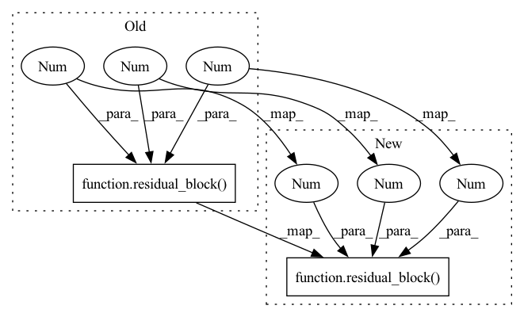

Pattern ID :40751

Before Change
self.resid = {}
for i in range(1, FLAGS.num_resblock + 1, 1):
if i == 1:
net = nn.Sequential(residual_block(64, 64, 1), conv2_tran(64, 3, 64, 2), nn.ReLU(),
conv2_tran(64, 3, 64, 2), nn.ReLU(), conv2(64, 3, gen_output_channels, 1))
else:
net = nn.Sequential(residual_block(gen_output_channels, 64, 1), conv2_tran(64, 3, 64, 2), nn.ReLU(),
After Change
self.conv = nn.Sequential(conv2(51, 3, 64, 1), nn.ReLU())
self.num = FLAGS.num_resblock
self.resid = residual_block(64, 64, 1)
self.conv_trans = nn.Sequential(conv2_tran(64, 3, 64, stride=2, output_padding=1), nn.ReLU()
,conv2_tran(64, 3, 64, stride=2, output_padding=1), nn.ReLU())
self.output = conv2(64, 3, gen_output_channels, 1)
In pattern: SUPERPATTERN
Frequency: 3
Non-data size: 2
Instances
Fragment ID: 115096508
Project Name: dwightfoster/pytorch-tecogan
Commit Name: b085a8da635422f7485f5b346ddefd4207b27f18
Time: 2021-01-15
Author: dwightfoster03@gmail.com
File Name: frvsr.py
M Class Name: generator
N Class Name: generator
M Method Name: __init__(3)
N Method Name: __init__(3)
M Parent Class: nn.Module
N Parent Class: nn.Module
M File Name: frvsr.py
N File Name: frvsr.py
M Start Line: 64
M End Line: 77
N Start Line: 62
N End Line: 67
'>
Before Change
self.resid1 = residual_block(256, 256, 1)
self.bn1 = batchnorm(256, True)
self.resid2 = residual_block(256, 256, 1)
self.bn2 = batchnorm(256, True)
self.resid3 = residual_block(256, 128, 1)
self.bn3 = batchnorm(128, True)
self.resid4 = residual_block(128, 128, 1)
After Change
// block3
self.block3 = discriminator_block(128, 256, 4, 2)
self.resids3 = nn.ModuleList([nn.Sequential(residual_block(256, 256, 1), batchnorm(256, True)) for i in range(int(args.num_resblock / 4))])
self.block4 = discriminator_block(256, 64, 4, 2)
'>
Fragment ID: 115096511
Project Name: dwightfoster/pytorch-tecogan
Commit Name: cb2b9c771c26f4971d6d96352cc426e179853453
Time: 2021-03-17
Author: dwightfoster03@gmail.com
File Name: code/models.py
M Class Name: discriminator
N Class Name: discriminator
M Method Name: __init__(2)
N Method Name: __init__(2)
M Parent Class: nn.Module
N Parent Class: nn.Module
M File Name: code/models.py
N File Name: code/models.py
M Start Line: 111
M End Line: 131
N Start Line: 108
N End Line: 118
'>
Before Change
self.conv = nn.Sequential(conv2(51, 3, 64, 1), nn.ReLU())
self.num = FLAGS.num_resblock
self.resid = residual_block(64, 64, 1)
self.conv_trans = nn.Sequential(conv2_tran(64, 3, 128, stride=2, output_padding=1), nn.ReLU()
, conv2_tran(128, 3, 128, stride=2, output_padding=1), nn.ReLU(),
conv2(128, 3, 64, 1), nn.ReLU())
self.output = conv2(64, 3, gen_output_channels, 1)
After Change
self.conv = nn.Sequential(conv2(51, 3, 64, 1), nn.ReLU())
self.num = FLAGS.num_resblock
self.resids = nn.ModuleList([residual_block(64, 64, 1) for i in range(self.num)])
self.conv_trans = nn.Sequential(conv2_tran(64, 3, 128, stride=2, output_padding=1), nn.ReLU()
, conv2_tran(128, 3, 128, stride=2, output_padding=1), nn.ReLU(),
'>
Fragment ID: 115096497
Project Name: dwightfoster/pytorch-tecogan
Commit Name: 883b6b4c2a7b0ac4ca5743f2f8e54a899f076ea8
Time: 2021-03-10
Author: dwightfoster03@gmail.com
File Name: code/models.py
M Class Name: generator
N Class Name: generator
M Method Name: __init__(3)
N Method Name: __init__(3)
M Parent Class: nn.Module
N Parent Class: nn.Module
M File Name: code/models.py
N File Name: code/models.py
M Start Line: 70
M End Line: 70
N Start Line: 69
N End Line: 70